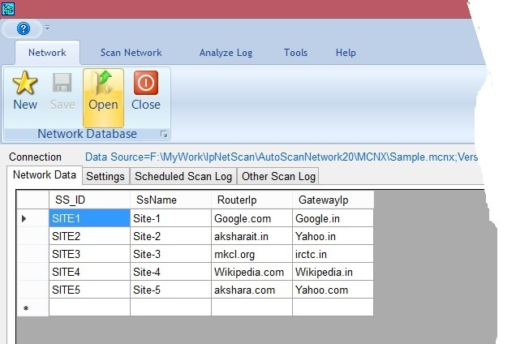

The project started for monitoring the communication/computer network of MSETCL (related with S/S data visibility with LD). To monitor the network manually generally following procedure needed.
Generally it observes that the manual method prone to errors. Thus this application (“AutoScanNetwork”) is developed which will do above work by click of a button. Below is screenshot showing HMI of the application.
Network: This tab has buttons for creation of a file (*.mcnx) having details of communication/computer network of MSETCL (related with S/S data visibility with LD).
Scan Network: This tab has buttons for carrying out ping trials and saving results in log file
Analyse Log: This tab having buttons for consolidating the ping result log file generated as above
Tools: Tab has the buttons for checking connectivity, to get MAC address of NIC and exporting scheduled scan log data to Excel.
Help: Help on using the program and information about the program.